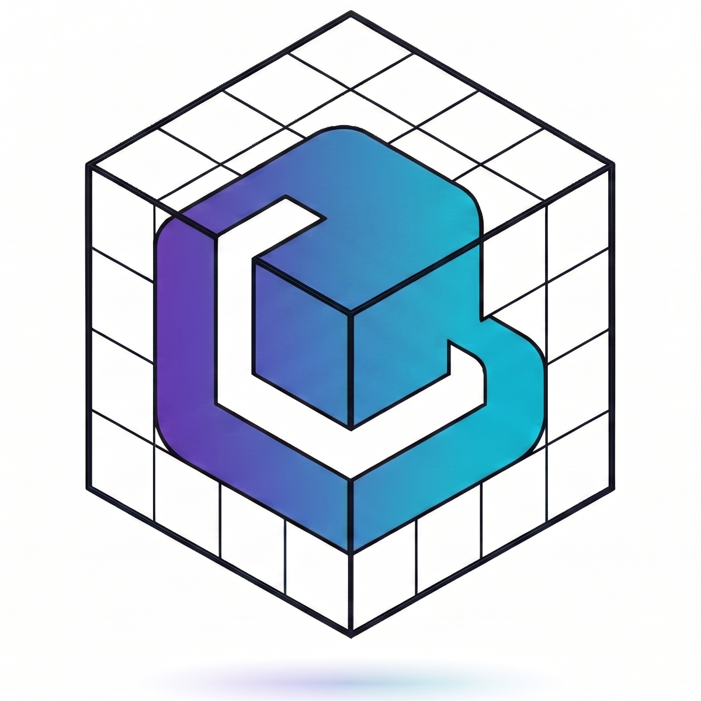
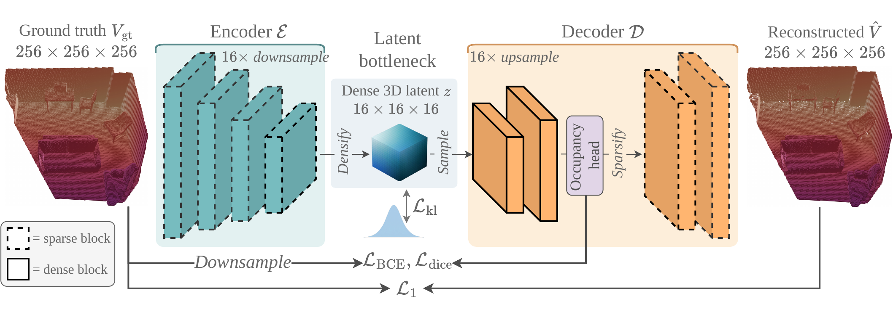
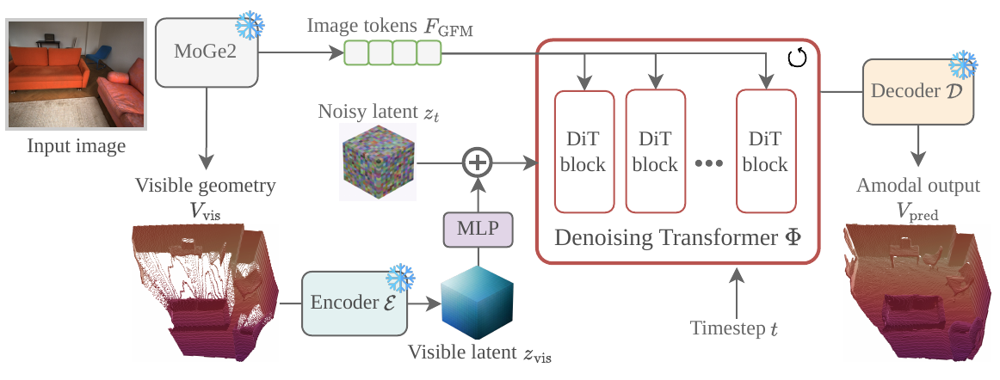
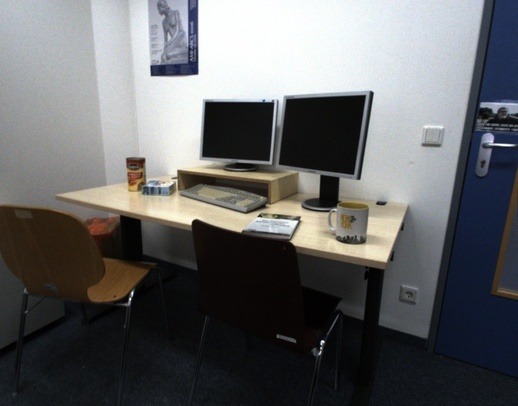
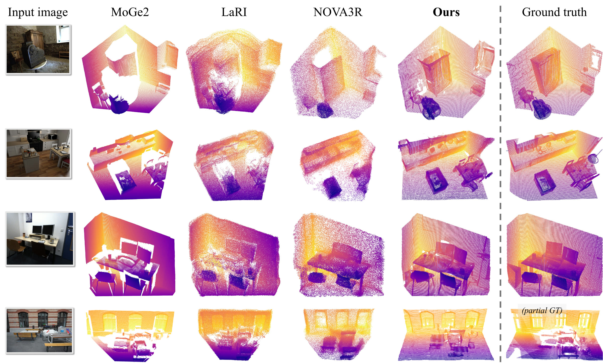
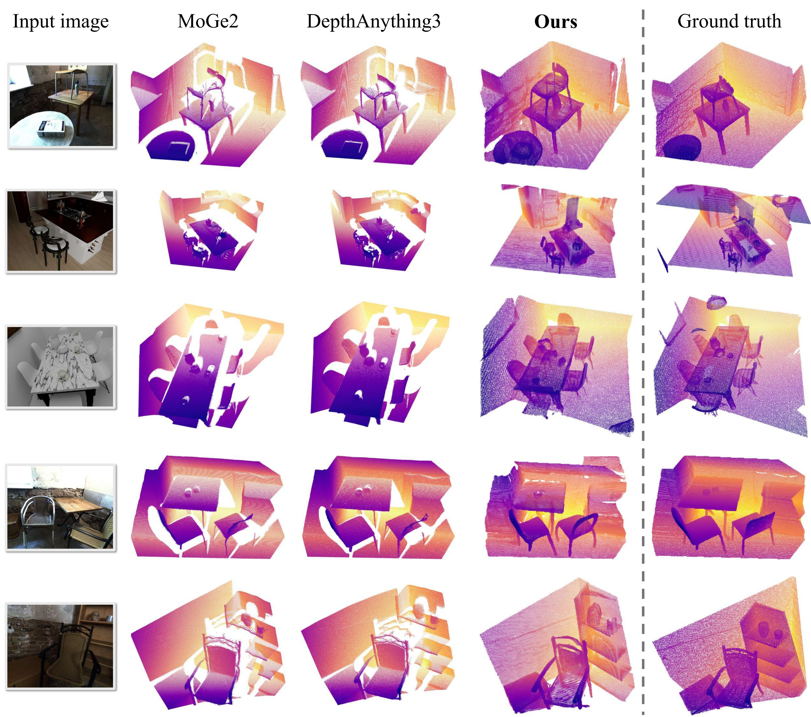
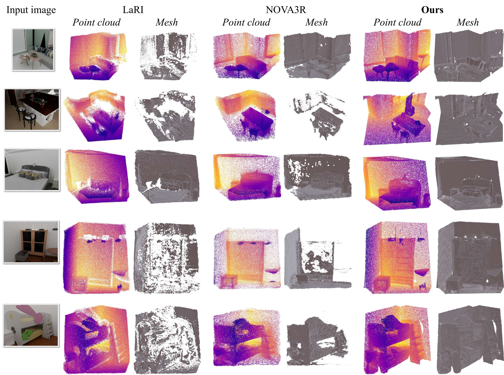
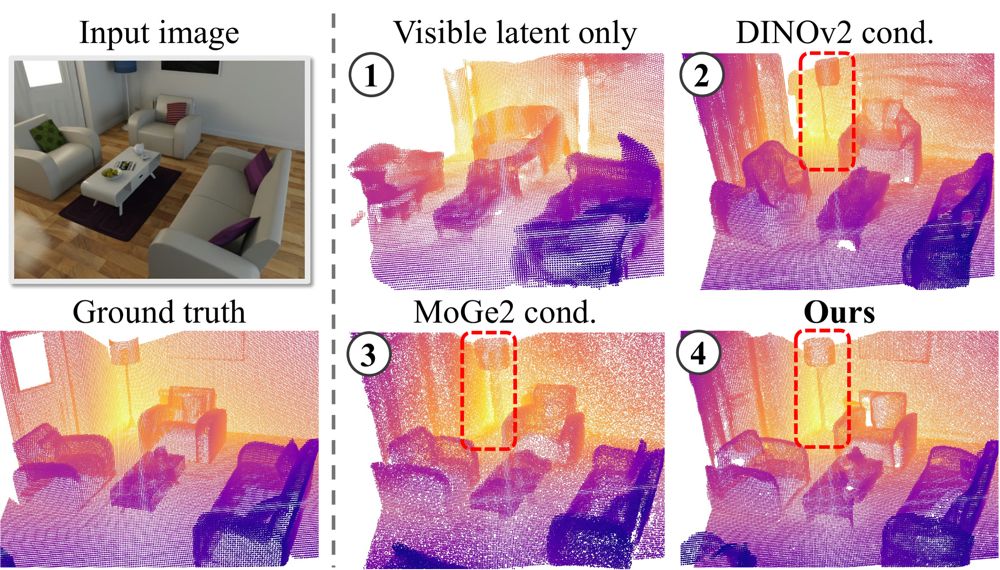

Amodal 3D Reconstruction from a Single Image
TL;DR VolFill recovers the complete 3D scene geometry from a single RGB image — including occluded surfaces hidden behind the visible geometry.

VolFill: Single-View Amodal 3D Scene Reconstruction with Volumetric Flow MatchingTL;DR VolFill recovers the complete 3D scene geometry from a single RGB image — including occluded surfaces hidden behind the visible geometry.
Reconstructing the complete geometry of a scene from a single RGB image remains challenging — especially when inferring hidden structures where visual evidence is incomplete. We introduce VolFill, a generative framework that predicts the 3D structure of the complete scene rather than relying on traditional pixel-aligned regression. Our method utilizes a hybrid 3D VAE to compress sparse truncated unsigned distance function grids into a compact latent space, paired with a latent Diffusion Transformer that denoises this representation to recover the complete scene. We condition the generation on geometry foundation models, leveraging rich spatial priors for robust reasoning. Unlike existing methods limited by per-ray constraints or unstructured point-cloud queries, VolFill provides a structured representation that supports direct surface extraction and occupancy queries at scale. Extensive experiments on the SCRREAM and NRGB-D datasets demonstrate that our approach significantly outperforms current baselines, providing a robust foundation for holistic spatial understanding.
VolFill is a generative framework that uses volumetric flow matching to recover complete, scene-level 3D geometry — including occluded surfaces — directly from a single RGB image.
A hybrid 3D VAE compresses high-resolution TUDF grids into a compact latent space, enabling efficient yet high-fidelity reconstruction of complex amodal structures.
A dual-conditioning strategy leverages geometry foundation models, fusing high-level image tokens with explicit visible geometry to guide robust amodal reasoning.
Single-view amodal 3D scene reconstruction. Given one RGB image $\mathbf{I} \in \mathbb{R}^{H \times W \times 3}$ of an indoor scene, we seek to recover the complete scene geometry $S$ within the camera frustum — including surfaces behind the visible foreground.
We represent the scene as a Truncated Unsigned Distance Function (TUDF) $V \in \mathbb{R}^{N \times N \times N}$ at resolution $N = 256$, where each voxel stores the distance to the nearest physical surface $\mathcal{S}$ clipped at a maximum value $\tau$: $V(\mathbf{p}) = \min(\mathrm{dist}(\mathbf{p}, \mathcal{S}), \tau)$.
Rather than predicting $V$ as a deterministic regression problem, we formulate amodal reconstruction as estimating the conditional distribution $P(V \mid I)$, realized by a hybrid 3D VAE that compresses $V$ into a compact latent space and a latent diffusion transformer trained with flow matching, conditioned on geometric priors from a frozen foundation model.


Frozen MoGe2 features serve as image tokens fed into the DiT via cross-attention, providing rich monocular geometric priors without fine-tuning the foundation model.
The MoGe2 visible pointmap is converted to a visible-only TUDF and encoded into a latent $\mathbf{z}_{\text{vis}}$, then added into the noisy latent through a zero-initialized projection $\tilde{\mathbf{z}}_t = \mathbf{z}_t + \mathrm{MLP}_0(\mathbf{z}_{\text{vis}})$, anchoring generation to the observed geometry.
We train on synthetic 3D-FRONT (96k image–TUDF pairs) and real-world ScanNet++ (46k samples), following the data splits of LaRI and NOVA3R.
Both stages use AdamW with mixed-precision training on two A6000 / L40S GPUs:
A selected baseline (middle) is shown side-by-side with VolFill (right). Pick a scene from row A; pick which baseline to compare against in row B. Cameras are synced — drag either viewer to orbit both.




We report Chamfer Distance (CD ↓, ×102), one-way coverage APDγ (↑) on the visible and occluded subsets, and F-score FSγ (↑) on the complete geometry. Thresholds γ ∈ {0.10, 0.02} are used on SCRREAM and γ ∈ {0.10, 0.05} on NRGB-D. Fréchet Point Cloud Distance (FPD ↓) is computed with a pretrained Uni3D feature extractor. Predictions and GT are rigidly aligned (scale + rotation + translation) before scoring. Best and second-best are highlighted.
| Method | Visible | Occluded | Complete | ||||||
|---|---|---|---|---|---|---|---|---|---|
| CD ↓ | APD0.1 ↑ | APD0.02 ↑ | CD ↓ | APD0.1 ↑ | APD0.02 ↑ | CD ↓ | FS0.1 ↑ | FS0.02 ↑ | |
| Object-level generative models† | |||||||||
| TripoSG† | 13.75 | 44.74 | 10.08 | 10.73 | 55.34 | 13.37 | 11.10 | 53.56 | 13.30 |
| TRELLIS† | 11.63 | 54.05 | 15.00 | 9.65 | 60.70 | 17.52 | 10.72 | 56.69 | 15.59 |
| Visible-surface baselines | |||||||||
| VGGT | 3.04 | 96.98 | 45.62 | 17.40 | 44.60 | 10.04 | 6.77 | 80.45 | 36.77 |
| DepthAnything3 | 2.37 | 98.98 | 54.34 | 16.16 | 48.31 | 10.76 | 6.16 | 82.86 | 43.10 |
| DepthPro | 3.85 | 95.10 | 33.30 | 15.31 | 48.66 | 9.71 | 6.90 | 80.36 | 28.44 |
| MoGe2 | 2.28 | 99.38 | 57.42 | 15.29 | 50.09 | 10.30 | 5.74 | 83.96 | 45.84 |
| Scene-level amodal reconstruction | |||||||||
| LaRI | 3.43 | 95.48 | 41.61 | 5.23 | 85.25 | 29.31 | 5.19 | 85.43 | 30.85 |
| NOVA3R | 3.20 | 96.77 | 43.75 | 3.56 | 94.86 | 41.21 | 3.43 | 95.26 | 45.12 |
| VolFill (ours) | 2.84 | 96.10 | 56.73 | 3.46 | 92.70 | 55.53 | 3.03 | 95.03 | 54.83 |
† Trained on object-centric datasets; not designed for full scene reconstruction. All numbers scaled by ×102.
| Method | Visible | Occluded | Complete | ||||||
|---|---|---|---|---|---|---|---|---|---|
| CD ↓ | APD0.1 ↑ | APD0.05 ↑ | CD ↓ | APD0.1 ↑ | APD0.05 ↑ | CD ↓ | FS0.1 ↑ | FS0.05 ↑ | |
| Visible-surface baselines | |||||||||
| VGGT | 3.25 | 96.51 | 81.63 | 21.38 | 42.15 | 26.35 | 9.44 | 73.85 | 58.91 |
| DepthAnything3 | 2.69 | 98.68 | 89.24 | 21.65 | 43.34 | 28.15 | 8.88 | 74.87 | 63.52 |
| DepthPro | 4.38 | 92.56 | 67.41 | 22.19 | 41.69 | 24.64 | 10.03 | 71.30 | 51.60 |
| MoGe2 | 2.62 | 98.46 | 89.55 | 21.12 | 43.31 | 28.43 | 9.31 | 75.35 | 61.93 |
| Scene-level amodal reconstruction | |||||||||
| LaRI | 4.09 | 93.77 | 73.51 | 13.04 | 64.53 | 45.82 | 9.79 | 68.37 | 43.47 |
| NOVA3R | 5.05 | 89.63 | 64.44 | 8.31 | 80.50 | 58.55 | 8.19 | 73.99 | 49.92 |
| VolFill (ours) | 4.52 | 90.06 | 69.22 | 6.97 | 81.41 | 62.48 | 6.44 | 84.35 | 63.92 |
Evaluation on the metric-scale frame (no Sim(3) alignment). Distributional similarity is measured by Fréchet Point Cloud Distance using a pretrained Uni3D feature extractor.
| Method | CD ↓ | FS0.02 ↑ | FPD ↓ |
|---|---|---|---|
| LaRI | 11.43 | 11.47 | — |
| NOVA3R | 6.56 | 22.23 | 16.50 |
| VolFill (ours) | 3.88 | 44.90 | 4.86 |
Relying only on the visible latent (① in the figure) fails to recover unobserved structure; image-only conditioning with DINOv2 (②) or MoGe2 (③) hallucinates rough layouts but loses fine detail. The dual setup (④) — MoGe2 cross-attention plus additive injection of the visible latent — yields the sharpest, most complete geometry, with quantitative agreement in Table 5 below.

Table 5 — Conditioning ablation.
| Config. | FGFM | zvis | CD ↓ | FS0.02 ↑ |
|---|---|---|---|---|
| Single | ✗ | Add | 6.80 | 31.72 |
| MoGe2 | ✗ | 3.81 | 46.80 | |
| Dual | MoGe2 | Concat | 3.66 | 48.94 |
| MoGe2 | Add | 3.03 | 54.83 |
Replacing MoGe2 with the semantic-only DINOv2 backbone collapses reconstruction quality — semantic tokens alone lack the 3D spatial anchors the DiT needs. VGGT improves over DINOv2 but still lags MoGe2, indicating that structural consistency from a geometry-trained backbone is a stronger prior than general semantic reasoning for amodal completion.
Table 6 — Foundation model ablation.
| Conditioning | CD ↓ | FS0.02 ↑ |
|---|---|---|
| DINOv2 | 5.46 | 35.98 |
| VGGT | 4.32 | 42.30 |
| MoGe2 | 3.81 | 46.80 |
@article{ngo2026volfill,
title = {VolFill: Single-View Amodal 3D Scene Reconstruction with Volumetric Flow Matching},
author = {Ngo, Tuan Duc and Gan, Chuang and Kalogerakis, Evangelos},
journal = {arXiv preprint},
year = {2026}
}